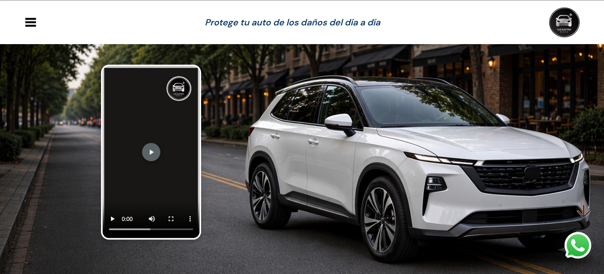
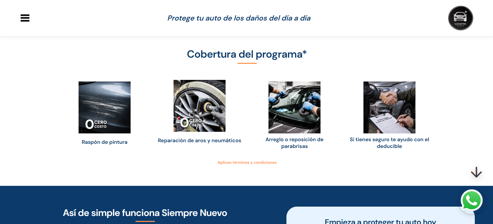
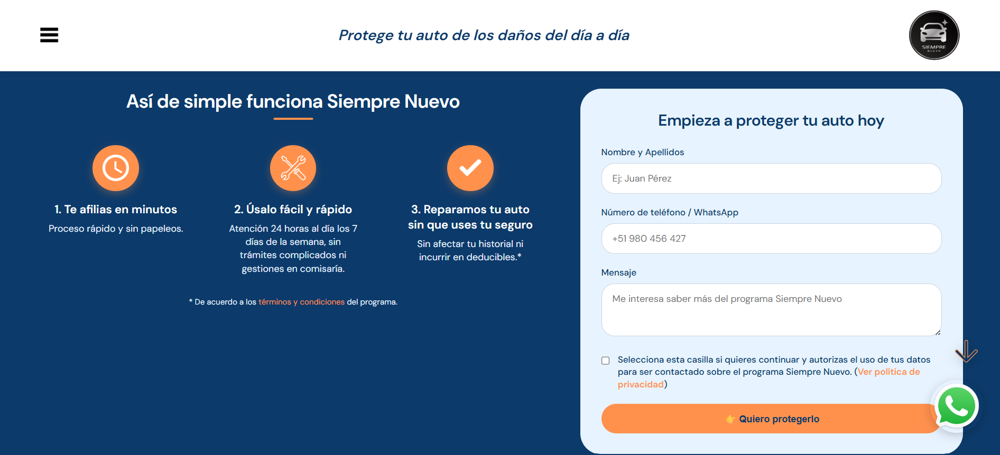
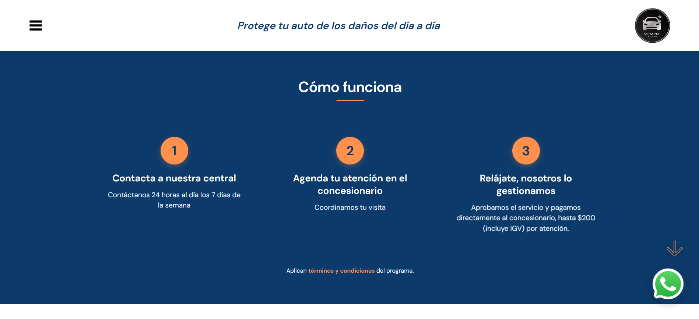
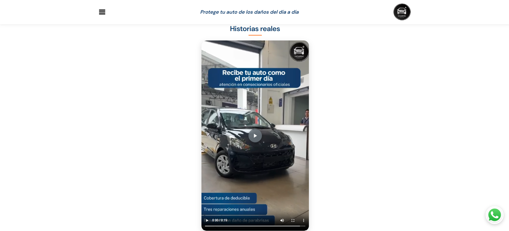
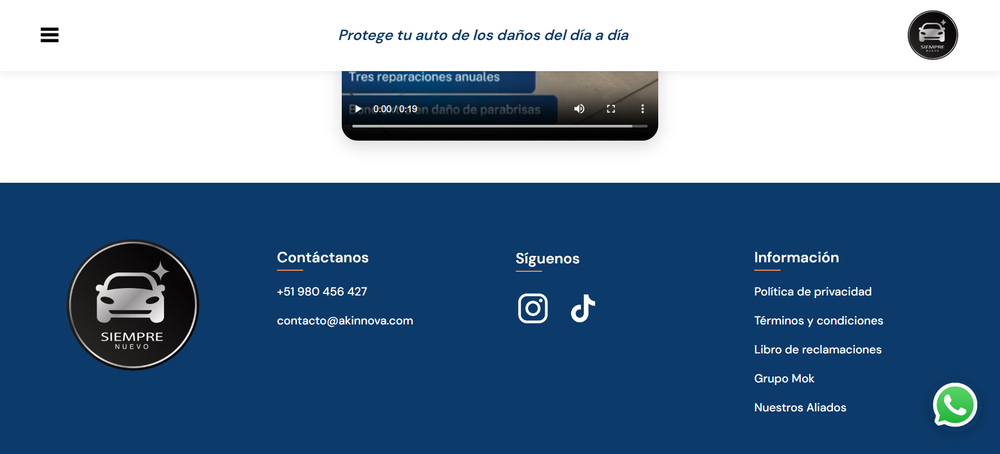
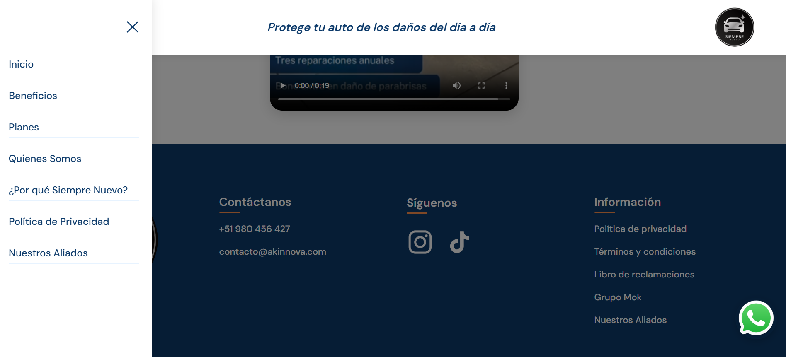

Problema
Contexto del proyecto
El servicio necesitaba una página propia para explicar beneficios, cobertura, funcionamiento, planes, aliados y condiciones de forma clara.
Caso de estudio
Página comercial independiente dentro del ecosistema Akinnova, orientada a explicar un servicio automotriz y convertir interesados.
Problema
El servicio necesitaba una página propia para explicar beneficios, cobertura, funcionamiento, planes, aliados y condiciones de forma clara.
Solución
Desarrollé un micrositio informativo entre marzo y abril de 2026, con secciones comerciales, contenido explicativo, beneficios, funcionamiento, aliados y coherencia visual con la marca Akinnova.
Mi participación
Organicé el contenido comercial, implementé la estructura frontend, páginas complementarias y adaptación responsive.
Funciones
Evidencia visual
Imágenes representativas del proyecto. En proyectos privados, se muestran recursos generales sin exponer información sensible.







Tecnologías
Siguiente versión
Contacto
Puedo explicar la arquitectura, flujo de trabajo o decisiones técnicas detrás de este proyecto.